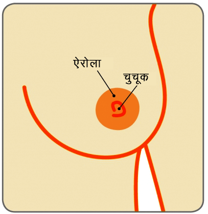

स्तन

सुसाध्य स्तन स्वास्थ्य समस्याएं
फाइब्रोएडीनोमा
प्रिया (परिवर्तित नाम), एक 28 वर्ष की महिला को अपने दाये स्तन में स्वतंत्र अस्थिर गांठ दिखाई दी।
फाइब्रोएडीनोमा क्या है
दुग्धवाहिकाएं (चूचुक तक दूध पहुंचाने वाली नलिकाएं) और पिण्डिकाएं (दूध-उत्पन्न करने वाली ग्रंथियां) जो वसायुक्त व सहायक ऊतकों से घिरी होती है, उसे स्तन कहते हैं। कभी-कभी ये ऊतक पिण्डिका पर गेंद जैसी ठोस गांठ बन जाती है। यही फाइब्रोएडीनोमा होता है। स्तन में यह सामान्य सुसाध्य (कैंसरमुक्त गांठ) होती है।
स्तन
चूचुक

फाइब्रोएडीनोमा होने का क्या कारण है
ऐसा माना जाता है कि यह महिलाओं में हार्मोन एस्ट्रोजन की संवेदनशीलता बढ़ने के कारण उत्पन्न होता है।
फाइब्रोएडीनोमा कितने प्रकार के होते हैं
सरल फाइब्रोएडीनोमाअधिकांश फाइब्रोएडीनोमा 1 से 3 सेंमी व्यास के होते हैं और इसे सामान्य फाइब्रोएडीनोमास कहते हैं। सरल फाइब्रोएडिनोमास से भविष्य में स्तन कैंसर विकसित होने का खतरा नहीं बढ़ता है।
जटिल फाइब्रोएडीनोमाकुछ फाइब्रोएडीनोमा को जटिल फाइब्रोएडीनोम कहते हैं। जटिल फाइब्रोएडीनोमा होने से भविष्य में स्तन कैंसर विकसित होने का थोड़ा खतरा बढ़ जाता है।
जाइअंट या जूवेनाइल फाइब्रोएडीनोमाकभी, एक फाइब्रोएडीनोमा 5 सेमी व्यास से अधिक विकसित हो सकता है जिसे जाइअंट फाइब्रोएडीनोमा कहते हैं। किशोर लड़कियों में पाये जाने वाले फाइब्रोएडीनोमा को जूवेनाइल फाइब्रोएडीनोमा कहते हैं।
क्या यह सुसाध्य (हानिरहित) होता है
अधिकांश फाइब्रोएडीनोमा सुसाध्य (कैंसरमुक्त) होते हैं और इसमें स्तन कैंसर विकसित होने का खतरा नहीं होता है। जटिल फाइब्रोएडीनोमा का मैलिग्नेंट में बदलने का मामूली खतरा होता है।
फाइब्रोएडीनोमा किस तरह का अहसास होता है और आमतौर पर किस उम्र में उत्पन्न होता है
फाइब्रोएडीनोमा आमतौर पर रबड़ जैसी लोचदार बनावट के होते हैं जो त्वचा के अंदर आसानी से स्थानांतरित हो जाते हैं। इसलिए इसे कभी-कभी ‘स्तन चूहा‘ भी कहते हैं। आमतौर पर फाइब्रोएडीनोमा दर्दरहित होते हैं।
फाइब्रोएडीनोमा होना आम बात है और एक से अधिक होना सामान्य होता है। ये किशोरावस्था के दौरान विकसित होता है और ज्यादातर नवयुवतियों में पाया जाता है, लेकिन ये किसी भी उम्र की महिलाओं में उत्पन्न हो सकता है। अधिकांश फाइब्रोएडीनोमा 1 से 3 सेंमी व्यास के होते हैं और इसे सामान्य फाइब्रोएडीनोमास कहते हैं। कुछ 5 सेमी व्यास से अधिक विकसित हो जाते है जिसे जाइअंट फाइब्रोएडीनोमा कहते हैं। किशोर लड़कियों में पाये जाने वाले फाइब्रोएडीनोमा को जूवेनाइल फाइब्रोएडीनोमा कहते हैं।
यदि फाइब्रोएडीनोमा का उपचार नहीं किया जाए तो क्या यह बढ़ता है
अधिकांश फाइब्रोएडीनोमा एक ही आकार के रहते हैं। फाइब्रोएडीनोमा की संख्या में वृद्धि हो जाती है। फाइब्रोएडीनोमा गर्भावस्था व स्तनपान के दौरान भी अधिक बढ़ सकते हैं। यह बिल्कुल सामान्य होते हैं जो कि चिंताजनक नहीं है।
फाइब्रोएडीनोमा का निदान किस प्रकार किया जाता है
फाइब्रोएडीनोमा स्तन में गांठ के रूप दिखाई देता है। विशेषज्ञ से सलाह लेना आवश्यक है और ट्रिपल परीक्षण से सूचित तीन विभिन्न परीक्षण कराना अनिवार्य है, ताकि इसका सुनिश्चित निदान किया जा सकें। ये चिकित्सीय स्तन परीक्षण होते है - मैमोग्राम (स्तन का एक्स-रे) और अल्ट्रासाउण्ड स्कैन (जो उच्च आवृत्ति ध्वनि तरंगों के इस्तेमाल से स्तन का चित्र बनाती है) और अल्टासाउण्ड के मार्गदर्शन के अंतर्गत गांठ की नीडल कोर बायोप्सी।


नीडल परीक्षण करने में किसे शामिल किया जाता है और क्या कोर बायोप्सी के समान ही एफएनएसी होती है?
नीडल परीक्षण को दो तरीके से किया जाता है। पहला तरीका फाइन नीडल ऐस्पेरेशन साइटालोजी (एफएनससी) है। एफएनएसी में गांठ की कोशिकाओं का सेेम्पल लेने के लिए बारीक सूई व सिरिंज का प्रयोग किया जाता है।
अब दुनियाभर के अधिकांश स्पेशलिस्ट सेंटरों में एफएनएसी के बजाय कोर नीडल बायोप्सी का इस्तेमाल किया जा रहा है। कोर बायोप्सी में सिर्फ कोशिकाओं के बजाय स्थानिक एनेस्थसिया के अंतर्गत गांठ से मामूली ऊतकों का सेम्पल लेने के लिए एक बड़ी सूई का प्रयोग किया जाता है। यह निदान करने का अधिक विश्वसनीय व सटिक तरीका है।


फाइब्रोएडीनोमा को कैसे नियंत्रित करे
यदि उपर्युक्त कोर बायोप्सी सहित ट्रिपल परीक्षण से फाइब्रोएडीनोमा की उपस्थिति साबित हो गई है, तो उस महिला को दिलासा दिलायें कि यह गांठ कैंसर नहीं है और न ही इससे कैंसर होगा।
यदि फाइब्रोएडीनोमा 2सेमी व्यास से कम आकार के हैं, तो इसे अनुपचारित छोड़ा जा सकता है और दो से तीन महिने में अल्ट्रासाउण्ड कराते रहे ताकि यह सुनिश्चित हो जायें कि यह बड़ा न हो। यदि इसके आकार में परिवर्तन नहीं होता है, तो मरीज को जाँच करके छुट्टी दी जा सकती है। कुछ महिलाओं को गांठ होना पसंद नहीं आता है, इसलिए ऐसे मामलें में गांठ को सर्जरी से कांटछांट किया जा सकता है।
यदि गांठ बढ़ जाती है, इसमें दर्द होने लगता है या 3 सेमी व्यास से अधिक आकार की हो जाती है, तो फाइब्रोएडीनोमा को निकालने के लिए सर्जरी कराने की सलाह दी जाती है। लोकल एनेस्थेटिक के अंतर्गत ऑपरेशन किया जाता है, और मरीज को पूरे दिन या एक रात अस्पताल में रहना होता है।
शल्य चिकित्सा तकनीक में (ऑनकोप्लास्टिक ब्रेस्ट सर्जरी) प्रगति होने से, स्तन सुदंरता को कायम रखने के लिए स्तनमण्डल (एरीओला) के किनारे (गोलकार) चीरा देकर ऑपरेशन किया जाता है जिसके निशान मामूली व कुछ समय में मिट जाता है। सर्जरी के बाद स्तन में कोई खराबी नहीं होती है इसलिए इसे बेहतरीन सौंदर्य परिणाम माना जाता है।